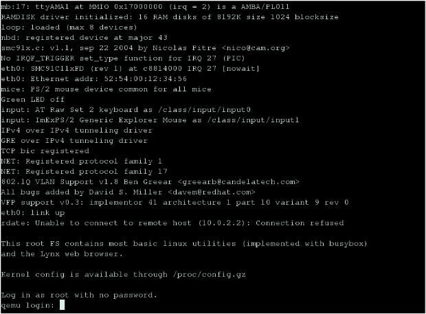
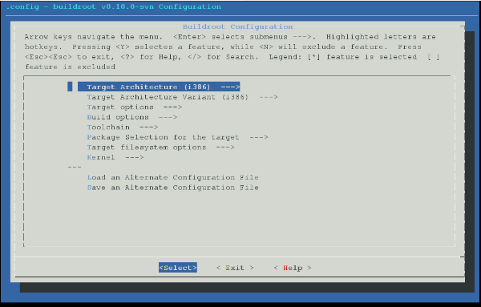

Lab 1 環境設定
文件目錄
OpenCSL 的意思是開放的電腦系統實驗教材（Computer System Lab course material），想要透過各種 open source 工具的使用來模擬嵌入式系統的開發環境，並提供對嵌入式系統有興趣的人一項入門的管道。
1. 實驗簡介
在第一次實驗中，我們將介紹本實驗的環境、環境的相關設定，以及整套實驗的流程。
1.1 什麼是嵌入式系統？
嵌入式系統是電腦系統的一種，和一般個人電腦不同的是，它通常是為了特定目的而設計的，而且只有有限的硬體資源可以使用，這些特性使得開發嵌入式系統比一般系統開發還要複雜。嵌入式系統的相關介紹可以參考 wikipedia [1] 。
| [1] | http://en.wikipedia.org/wiki/Embedded_system |
1.2 實驗操作環境介紹
在本套實驗中，我們使用軟體來模擬嵌入式系統的環境，希望對嵌入式系統有興趣的人能夠在自己的電腦上完成所有實驗。本套實驗使用的各項環境如下：
- 作業系統：ubuntu 7.10
- 模擬軟體：QEMU
- toolchain：buildroot
- 模擬平台：ARM
- 模擬的作業系統：Linux
1.3 實驗流程
本套實驗將以循序漸進的方式，逐步介紹開發嵌入式系統所需的知識及技術，並搭配 open source 工具來實做各個實驗。
- Lab01 環境設定
介紹實驗，以及準備實驗環境。
- Lab02 製作 Linux Kernel
這次實驗是在介紹如何製作作業系統的核心部份，內容包括了：介紹 Linux Kernel、介紹製作符合自己需求的 kernel ，並將 Linux 放在不同的 platform 上執行。
- Lab03 製作 root filesystem
此次實驗將介紹如何製作一個 filesystem ，使整個作業系統可以順利運行，內容包括了：介紹 root filesystem、製作搭配 Linux Kernel 的 root filesystem 以及使用 NFS。
- Lab04 OS porting
在已經有能力做出整個作業系統後，我們將介紹如何將作業系統 port 到目標的平台 [2] 上，讓 target 能夠順利啟動並進入作業系統中。這次實驗的內容包括了：介紹 bootloader 以及製作並使用 bootloader。
- Lab05 debugger 和 software emulator
本次實驗在介紹如何在對嵌入式系統進行除錯，內容包含了 GDB 以及 Insight 的使用教學。
- Lab06 Interrupt 和 Exceptions
Interrupt 和 exception 是 Linux 裡程式互相溝通的方式之一，它可能由硬體產生，也有可能由軟體產生。本實驗將介紹 interrupt 和 exception 的觀念，並透過實做一個新的 system call 以及修改 device driver 來更深入了解 Linux 的運作方式。
- Lab07 Linux Timer Interrupt
Timer interrupt 是系統核心的一部分，它的出現頻率會和系統的效能有關。本實驗將介紹如何調整 linux kernel 中的 timer 以及了解其對系統的影響。
- Lab08 Linux Device Driver
由於嵌入式系統的多樣性，每個系統常常擁有和其他平台不同的裝置，也就需要額外的驅動程式才能控制裝置。本實驗將介紹兩種撰寫驅動程式的方法，以及學會在 linux 中使用額外裝置的方法。
| [2] | 在 porting 中，要 port 的目標平台叫做 target ，而負責處理、編譯系統的平台叫做 host。 |
2. 準備操作環境
2.1 Ubuntu 7.10
Ubuntu [3] 是由 Debian 的分支發展出來的一套 linux distribution，可以直接從官方網站 [4] 上下載到安裝/ 試用光碟。 若要安裝 Ubuntu 在電腦上，請至少預留2G的空間，供日後各程式原始碼、執行檔儲存。
| [3] | http://zh.wikipedia.org/wiki/Ubuntu |
| [4] | http://www.ubuntu.org.tw/ |
2.2 QEMU
QEMU 是一套 emulator [5] 軟體，能在 PC 系統上模擬其他 processor 的運作方式，在 Linux 或 Windows 上都能執行。 QEMU 的相關介紹可參考維基百科或是其官方網站 [6]
| [5] | http://en.wikipedia.org/wiki/Emulator |
| [6] | http://fabrice.bellard.free.fr/qemu |
2.2.1 在 Ubuntu 7.10 上安裝 QEMU
QEMU的i386執行檔可以直接從官方網站上下載，或是直接下載原始碼來編譯。 若需下載原始碼，可開啟 Ubuntu 終端機視窗，並執行以下指令：
1. 安裝編譯時所須的套件
sudo apt-get install gcc-3.4 libsdl1.2debian-all libsdl1.2-dev zlib1g-dev
2. 在欲安裝的目錄下，下載原始碼
wget http://bellard.org/qemu/qemu-0.9.1.tar.gz
3. 解壓縮原始碼包裹
tar zxf qemu-0.9.1.tar.gz
4. 編譯 QEMU
cd qemu-0.9.1/ ./configure --cc=/usr/bin/gcc-3.4 --host-cc=/usr/bin/gcc-3.4 --target-list=arm-softmmu make
經上述步驟，我們可以編譯出一個能夠執行 ARM 指令集的 QEMU emulator。
2.2.2 使用 QEMU
這裡透過使用 QEMU 官方網站上的 ARM-test disk image 來驗證 QEMU 否安裝正確
1. 下載 arm-test disk image
wget http://bellard.org/qemu/arm-test-0.2.tar.gz
2. 解壓縮
tar zxf arm-test-0.2.tar.gz
3. 用 QEMU 執行 disk image
<QEMU>/arm-softmmu/qemu-system-arm -kernel <ARM_TEST>/zImage.integrator \
-initrd <ARM_TEST>/arm_root.img -nographic -append "console=ttyAMA0"
Note
<QEMU>：存放 QEMU 目錄的路徑，如 ~/qemu-0.9.1/ <ARM_TEST>：存放 arm-test 目錄的路徑
-kernel：指定要載入的 linux kernel
-initrd：指定要使用的 RAM disk
-nographic -append "console=ttyAMA0"：關掉視窗介面
若在一連串開計畫面後有看到登入提示列，可用 root 登入，就代表 QEMU 編譯成功了。（如下圖）
- 中斷、結束 QEMU
如果想結束執行 QEMU 回到終端機，可以先按「 ctrl + a」，然後再按「x」，即可結束 QEMU ；另外，按下「 ctrl + a 」再按下「c」則是可以從 Linux 切換到 QEMU 自己操作介面。
2.3 toolchain
toolchain 一套是用來製作程式的工具，它是由許多不同的工具構成，如 compiler 、 linker 等，關於 toolchain 的介紹可以參考維基百科 [7] 。 每一套 toolchain 都有不同的使用目的，而在嵌入式系統中，由於硬體資源（記憶體、計算能力）有限，我們常常無法在系統中安裝一套 toolchain ，取而代之的方法便是使用具有 cross compiler [8] 功能的 toolchain ，讓我們能夠直接在 host（硬體資源較充足的電腦，如個人電腦）上編譯出 target（想要開發的嵌入式系統）端能執行的程式。
Buildroot [9] 是一套基於 uClibc C library [10] ，用來編譯 cross-compilation toolchain/ filesystem 的程式組合，它能夠製作 cross-compilation toolchain ，讓我們能夠直接在 x86 平台上編譯出在 ARM 平台上執行的程式。在本系列實驗中，我們僅使用 buildroot 來製作 toolchain 。
| [7] | http://en.wikipedia.org/wiki/Toolchain / http://en.wikipedia.org/wiki/GNU_toolchain |
| [8] | http://en.wikipedia.org/wiki/Cross_compiler |
| [9] | http://buildroot.uclibc.org |
| [10] | http://en.wikipedia.org/wiki/Uclibc |
2.3.1 用 buildroot 製作 toolchain
安裝必須套件
在開始編譯 buildroot 前，要先在 Ubuntu 上安裝一些套件，請在終端機下鍵入：
sudo apt-get install bison flex gettext patch build-essential texinfo sudo apt-get install subversion sudo apt-get install libncurses5-dev
下載 buildroot 原始碼
我們可以用 subversion [11] 直接下載 buildroot 原始碼。在終端機底下鍵入
svn co -r 21163 svn://uclibc.org/trunk/buildroot
就會在目前所在的目錄下建立一個叫做 buildroot 的資料夾，並將相關檔案從 buildroot 的 subversion 下載下來。
更改 configure
由於我們只需要製作一套 cross-compilation toolchain ，因此要先將 buildroot 的其他功能關掉。在 buildroot 的目錄下鍵入
make menuconfig
就可以進入 buildroot 的編輯選單，選單畫面如下：
接著，我們要將 target 改成 ARM ，並取消製作 filesystem 。
- 將 target 改成 ARM architechure
將游標移至「Target Architechure」，並按 enter 進入選項，接著選擇「arm」，按下 enter 即可。
- 取消製作 filesystem
在主選單中，進入「Target filesystem options」選項，並在「ext2 root filesystem」上按「n」以取消製作 ext2 root filesystem，接著按「->」，將游標移至「Exit」，並按下 enter 回到上一層選單。 接著，在主選單中進入「Package Selection for the target」中，按下 n 取消「Busybox」選項。
- 取消編譯 kernel
接著，在回到主選單後，進入「Kernel」選項，再進入「Kernel type」選項，把 kernel type 選為「none」以取消製作 linux kernel 。
- 擴充 toolchain 功能
為了在往後能夠使用 NFS (Network filesystem)，需增加一些 toolchain 的功能。請在主選單中，進入「Toolchain」選項，並在底下找到一個「Enable RPC」，按下 y 即可選取。待調整完選項後回到主選單，按「->」，將游標移至「Exit」，即可存檔離開。
製作 toolchain
在設定完成之後，只要直接在 buildroot 的目錄上鍵入 make ，buildroot 就會製作 toolchain ，此時請記得讓電腦處在有網路連線的狀態，因為 buildroot 會到網路上抓一些需要的程式碼。 當 buildroot 開始編譯後，建議不妨休息一下，或找本書來看，因為製作 toolchain 需要一段不短的時間。
| [11] | http://en.wikipedia.org/wiki/Subversion_%28software%29 |
2.3.2 設定 toolchain
等 buildroot 完成編譯後，我們可以在 build_arm/staging_dir/usr/bin 下找到我們在往後實驗中要使用的 toolchain ，他們全部是以 arm-linux-uclibc- 開頭，後面則是接著各個程式的功能，如 gcc 、 as 、 ld 等。
為了方便往後使用，我們可以設定 $PATH 參數，讓 bash shell 在搜尋可執行檔時也會搜尋這組編好的 toolchain 。假設 buildroot 的根目錄是 <buildroot> ，則在終端機鍵入
export PATH=<buildroot>/build_arm/build_arm/staging_dir/usr/bin:$PATH
或是在家目錄的 .bashrc 中加入這一行指令，再用
source ~/.bashrc
來載入 bash shell 的新設定。
當設定完成後，我們可以試著直接在終端機鍵入 arm-linux ，再按 tab ，就會直接列出我們剛編好的 toolchain 供選擇。

3. 參考資料
3.1 Linux 版本狀況
An extremely rushed history of the Linux kernel
| version | released date |
|---|---|
| 0.01 | Sep, 1991 |
| 1.0.0 | Mar, 1994 |
| 1.2.0 | Mar, 1995 |
| 2.0.0 | Jun, 1996 |
| 2.2.0 | Jan, 1999 |
| 2.4.0 | Jan, 2001 |
| 2.6.0 | Dec, 2003 |
| 2.6.14 | Oct 27, 2005 |
| 2.6.15 | Jan 2, 2006 |
| 2.6.16 | Mar 19, 2006 |
| 2.6.17 | Jun 17, 2006 |
| 2.6.18 | Sep 19, 2006 |
| 2.6.19 | Nov 29, 2006 |
| 2.6.20 | Feb 4, 2007 |
| 2.6.21 | Apr 21, 2007 |
| 2.6.22 | Jul 8, 2007 |
| 2.6.23 | Oct 9, 2007 |
Linux Kernel Version History tracks all release records before year 2000.
4. 延伸閱讀
相關官網
- Ubuntu http://www.ubuntu.org.tw/
- Qemu http://bellard.org/qemu
- Buildroot http://buildroot.uclibc.org/
Wikipedia
- Embedded_system http://en.wikipedia.org/wiki/Embedded_system
- Ubuntu http://zh.wikipedia.org/wiki/Ubuntu
- Emulator http://en.wikipedia.org/wiki/Emulator
- Toolchain http://en.wikipedia.org/wiki/Toolchain
- Cross_compiler http://en.wikipedia.org/wiki/Cross_compiler
- Uclibc http://en.wikipedia.org/wiki/Uclibc
- Subversion http://en.wikipedia.org/wiki/Subversion_%28software%29
5. 關於本文件
本文件以 reStructuredText 格式編撰，並可使用 docutils 工具轉換成 HTML 或 LaTeX 各類格式。